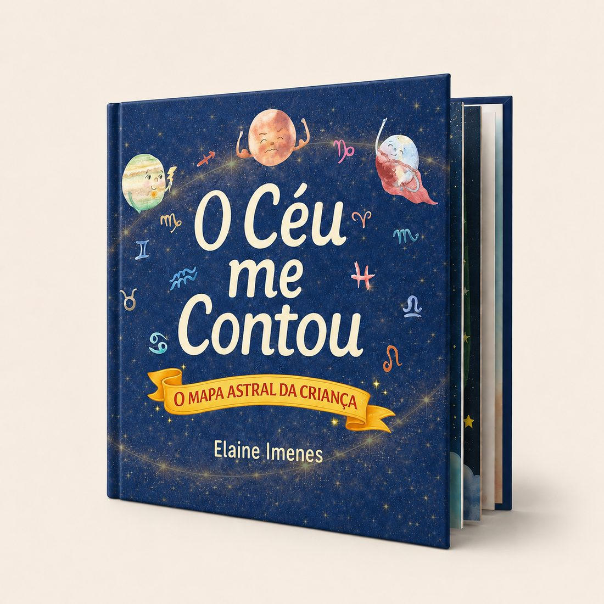
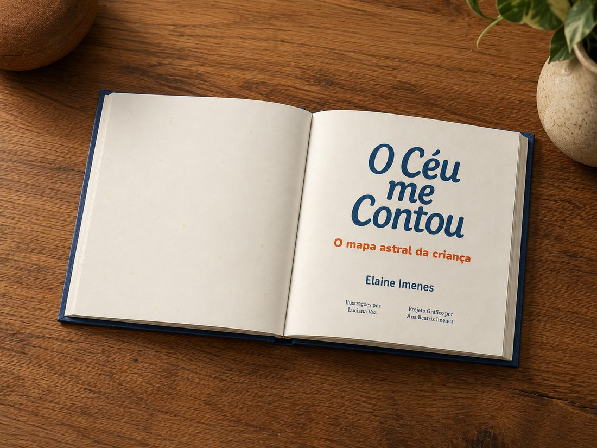
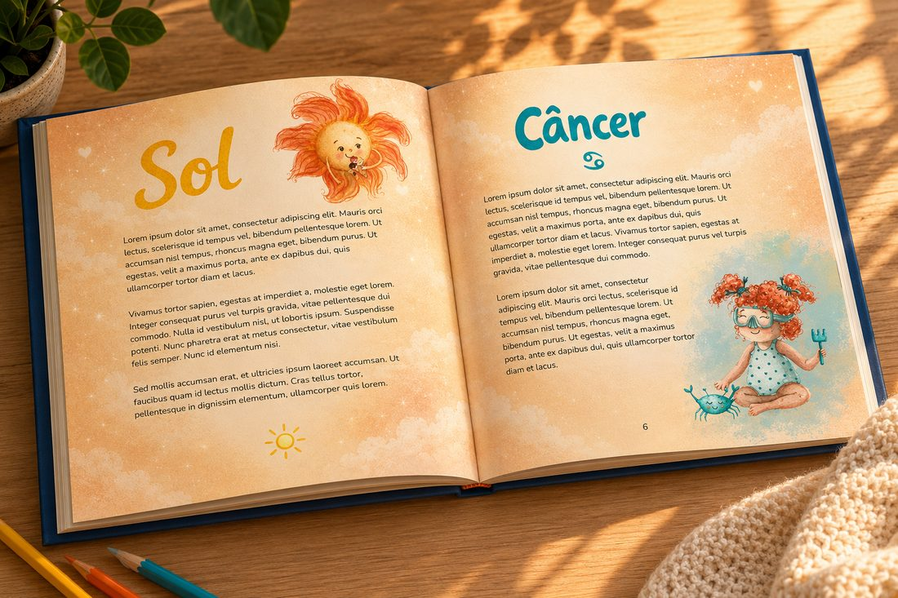
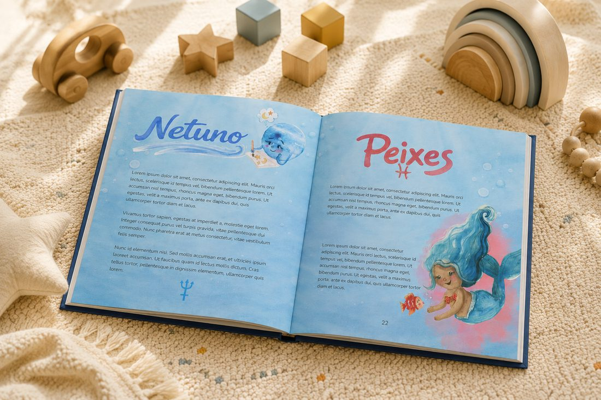
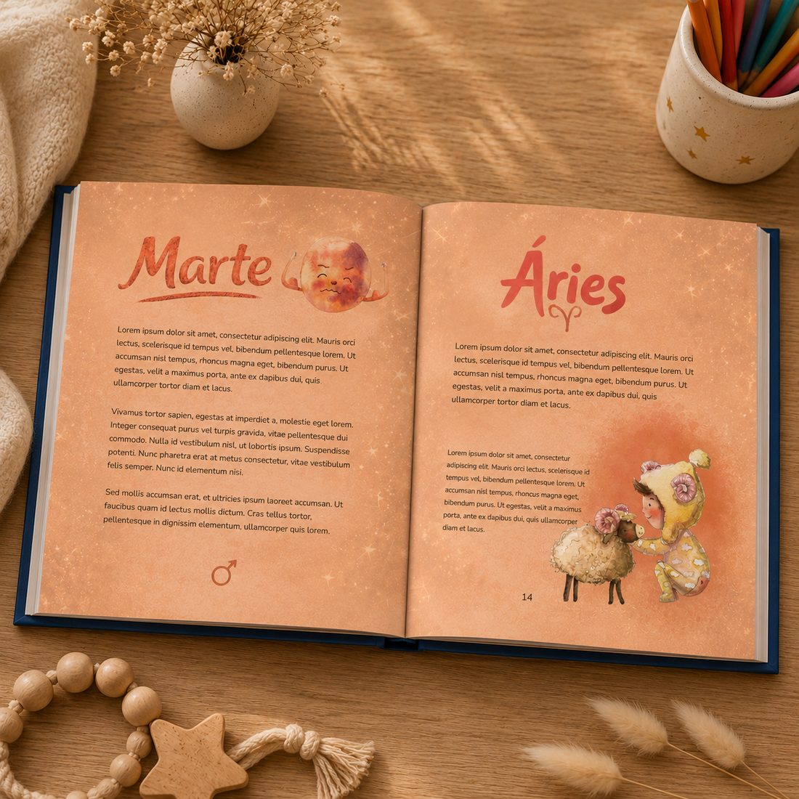
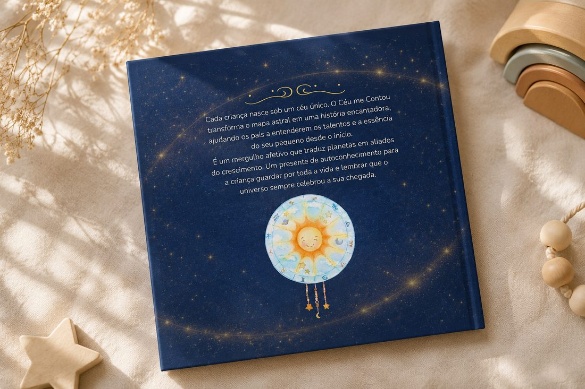

Um livro infantil individualizado, criado a partir da leitura do mapa astral da criança e de uma consulta com a família.
Mais do que um livro com o nome da criança, O Céu Me Contou é uma forma de olhar para a sua história com delicadeza, reconhecendo traços, potências e modos de estar no mundo — sem prender a criança a rótulos ou previsões.
Um vislumbre do acabamento, do papel e das ilustrações — cada livro nasce assim, com todo esse cuidado.






Toque em uma foto para ver maior.
R$ 900
O valor promocional de lançamento inclui:
Não é um livro pronto com informações inseridas depois. Cada exemplar nasce de um processo cuidadoso, individualizado e criado especialmente para a criança.
Quero encomendar o livro ← Voltar para O Céu Me Contou